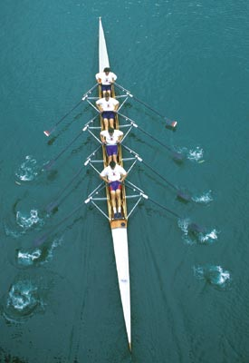

| Rennsport | |
|
Seit einigen Jahren hat der Wasser-Sport-Verein Düsseldorf wieder eine aktive Rennruderabteilung. Etwa 30 Jugendliche, Jungen und Mädchen, trainieren in allen Leistungsstufen unter der Leitung eines international erfahrenen Trainers.
Kinder ab einem Alter von etwa 12 Jahren erlernen unter Aufsicht von gut ausgebildeten Übungsleitern spielerisch das Rudern im Kinderskiff.. Der Schutzhafen vor unserem Clubhaus ist für Ruderanfänger ein ideales Übungsrevier. Mit zunehmenden Ruderkenntnissen trainieren unsere Rennruderer im Düsseldorfer Industriehafen. Gute Schwimmkenntnisse werden vorausgesetzt, obwohl man üblicherweise nicht ins Wasser fällt. Die Begeisterung und der Wille regelmäßig zu trainieren sind notwendige Voraussetzungen. Allerdings darf dabei die schulische Leistung nicht vernachlässigt werden. Die Mitarbeit und Unterstützung der Eltern ist ein wichtiger Erfolgsfaktor. Die regelmäßige Trainingsarbeit, die Teilnahme an Regatten und Trainingslagern macht unsere Jugendlichen teamfähig. Sie lernen sich selbst und ihre Zeit zu organisieren. Das sind Fähigkeiten, die auch das spätere berufliche Leben bestimmen werden. Spaß und Freude unter gleichgesinnten Jugendlichen kommen dabei keineswegs zu kurz. Für Fragen und Terminvereinbarungen stehen Ihnen unser Clubsekretariat oder unser Trainer Ioan Danga zur Verfügung. |
 |